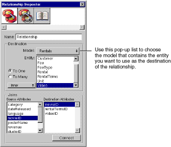

Table of Contents
Table of Contents  Next Section
Table of Contents
Next Section
Table of Contents  Previous Section
Previous Section
When you add a model to a project, it becomes part of a model group, even if the model group only contains that one model (for more information on model groups, see the EOModelGroup class specification in the Enterprise Objects Framework Reference). Each subsequent model that you add to the project-either directly by adding the model to the project's Resources suitcase or indirectly by adding a framework that includes a model-automatically becomes part of the group. Entity names must be unique within a model group; you can't use the same entity name in two different models in the same group. Put another way, all the entities used in an application must have unique names.
To form a relationship from one model to another, use the Relationship Inspector as follows:
For example, you can form a to-one relationship between the Movie entity in the Movies sample database and the VideoTape entity in the Rentals sample database.

Figure 27. Creating a Relationship Across Models
Table of Contents Next Section